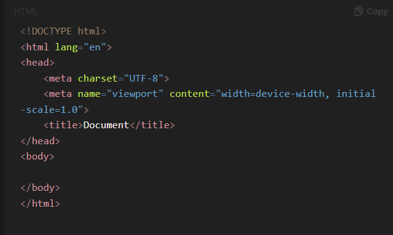
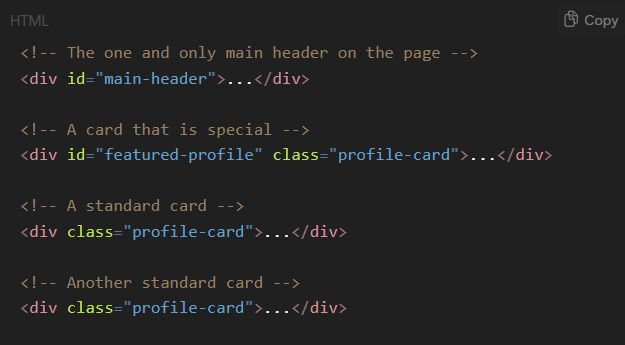
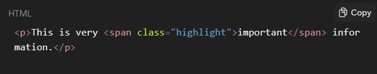

What is the difference between Relative Path and Absolute Path?
Relative Path
It tells the browser where to look for the file in relation to the current file.
It can navigate within the folder, subfolders, or parent folders depending on the path used.
Using relative paths makes your site portable, so if you move the whole folder, links still work without change.
Absolute Path
Absolute paths begin from the root directory or start with a full URL starting with "http://" or "https://".
It specifies the exact location of the resource on the internet or server.
Absolute paths are unambiguous but can be less flexible if the site structure or domain changes.
Mostly avoided in web projects due to security and portability reasons.
Why Use Boilerplate Code?
Time-saving:
Instead of writing the basic HTML structure from scratch every time, you start with a ready-made template. This speeds up development significantly.
Consistency:
Using the same boilerplate ensures all web pages have a consistent structure and formatting, which improves maintainability and readability.
Error Reduction:
Boilerplate code is well-tested and minimal, so it reduces the chance of missing critical tags or making syntax errors that break the page.
Better Browser Compatibility:
The boilerplate includes essential tags (such as DOCTYPE, meta charset) that ensure the page works well across different browsers and devices.
Focus on Content and Features:
By having the basic setup done, developers can focus more on actual content and functionality rather than setup details.
Boilerplate code is the necessary skeleton of every HTML page to ensure proper rendering and compatibility.
Understanding Boilerplate Code !

!DOCTYPE html: Declares HTML5 document type.
html lang="en": Sets language for the document.
head: Contains metadata , title, links.
body: Contains visible content.
Do you know why websites work even without Boilerplate?
Browsers are Built to Be Extremely Forgiving.
Think about the early days of the web. It was a chaotic "Wild West." People wrote messy, incorrect, and incomplete HTML all the time. If browsers had been strict—if they had crashed or refused to render a page because of a missing tag—the web would have never taken off.
So, browser makers (like Netscape and Microsoft) made a crucial design decision: "When in doubt, guess."
Multipage website
The fundamental truth is that complex information is almost never presented on a single, infinitely long page. We naturally break information into distinct, self-contained topics. A book has chapters, a store has departments, and a company has different aspects (About, Services, Contact).
UTF-8 and ASCII
UTF-8 encoding supports many languages and characters, preferred over ASCII in modern web pages.
Use of Div Tag
The div tag is a generic container used to group HTML elements for styling and scripting.
Class and ID Attributes
Class: Used for reusable styles across multiple elements.
Id: Used for unique elements on a page.
IDs must be unique; classes can be repeated.

Span Tag
Analogy:A span is like using a highlighter pen. You can mark a few words in a book without having to rip out the page and put it in a separate box.

Semantic HTML Tags
Header
Defines introductory content or navigation links.
This is the box for the introductory content at the top of your page or a section. It typically contains your logo, site navigation , and main heading.
Main
Specifies the main content unique to the document.
This is the most important one. It defines the main, unique content** of that specific page. It should not contain things that are repeated on every page (like the header or footer). There should only be one main tag per page.
Footer
Defines footer content like copyrights or links.
The box for the closing content at the bottom. It usually contains copyright info, contact details, and secondary links.